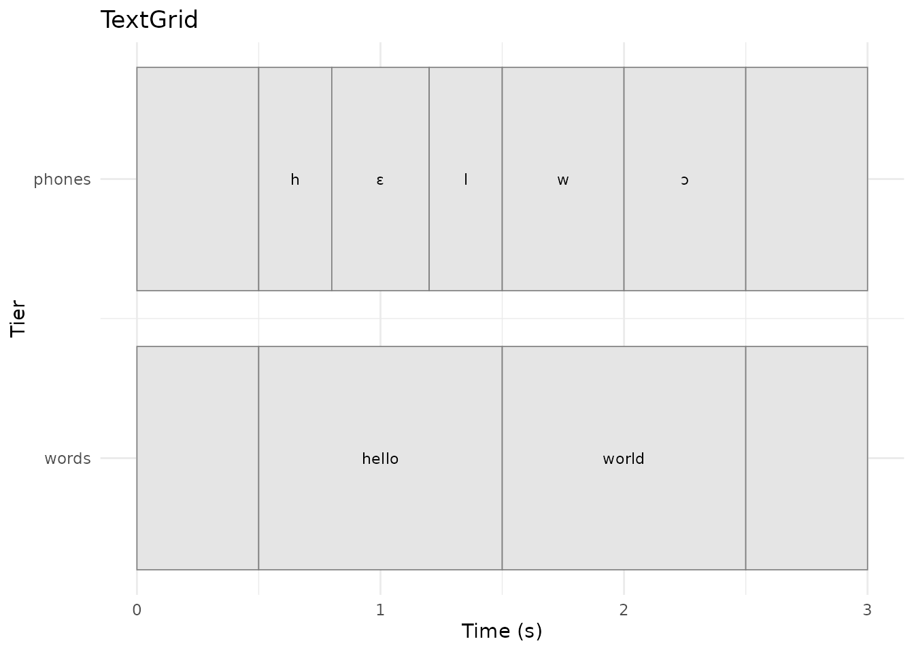
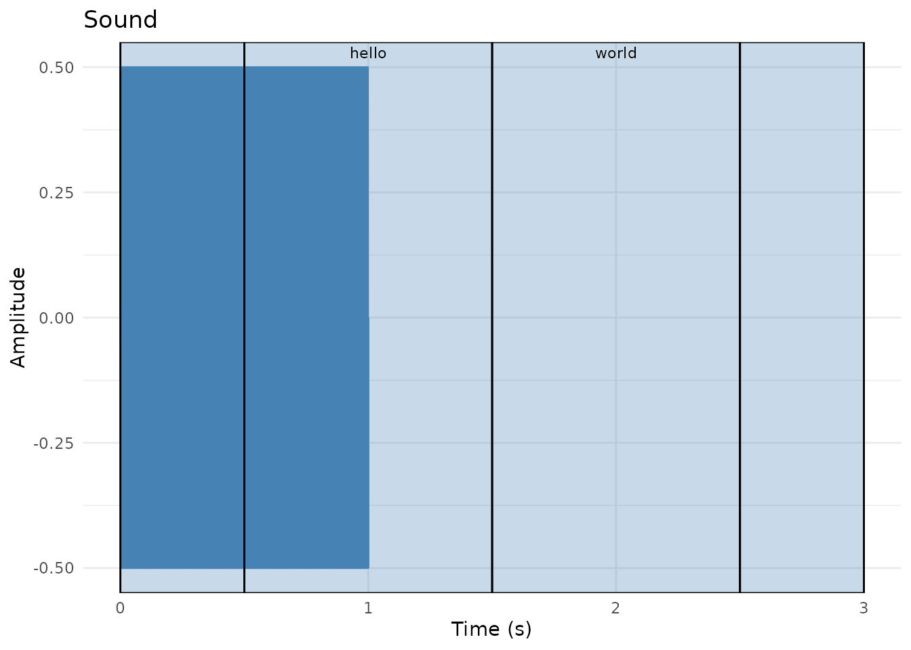

TextGrid Workflows with pladdrr
pladdrr Package Authors
2026-08-17
Source:vignettes/textgrid-workflows.Rmd
textgrid-workflows.RmdOverview
TextGrids are Praat’s standard format for time-aligned speech annotation. This vignette demonstrates:
- Creating TextGrids from scratch or from existing files
- Querying annotations (intervals, points, boundaries)
- Modifying annotations (insert, delete, relabel)
- Tier management (add, remove, rename)
- Large-scale corpus processing with performance optimization
- Data export to R data frames and CSV
- Integration with forced alignment tools
TextGrids are used throughout phonetic research for time-aligned annotation of speech data.
Background
TextGrid Structure
A TextGrid contains tiers of two types:
-
Interval tiers: Contiguous segments with start/end
times and labels
- Use cases: words, phones, syllables, utterances, speaker turns
- Each interval has: start time, end time, text label
-
Point tiers: Discrete time points with labels
- Use cases: landmarks (e.g., burst release, vowel onset), events, boundaries
- Each point has: time, text label
Common Workflows
Manual annotation: - Create TextGrid in Praat - Manually segment and label - Load in R for analysis
Forced alignment: - Use tools like Montreal Forced Aligner, WebMAUS, or Gentle - Generates word- and phone-level TextGrids automatically - Load in R for quality control and analysis
Hybrid approach: - Automatic alignment for initial segmentation - Manual correction in Praat - Batch analysis in R
Part 1: Creating TextGrids
Creating from Scratch
library(pladdrr)
#> pladdrr: direct access to Praat's core algorithms from R.
#> See ?pladdrr for an overview, or citation("pladdrr") for citation details.
# Create a TextGrid with multiple tiers.
# tier_names lists ALL tiers to create; point_tiers is the subset of those
# names that should be PointTiers instead of IntervalTiers (a tier must
# appear in tier_names before it can be designated a point tier).
tg <- TextGrid$create(
tmin = 0,
tmax = 10,
tier_names = "utterances words phones events",
point_tiers = "events"
)
cat("Created TextGrid with", tg$get_number_of_tiers(), "tiers\n")
#> Created TextGrid with 4 tiers
cat("Duration:", tg$get_total_duration(), "seconds\n")
#> Duration: 10 secondsAdding Interval Boundaries
# Add word boundaries to the "words" tier (tier 2)
word_tier <- 2
# Insert boundaries at specific times
tg$insert_boundary(word_tier, time = 1.0)
tg$insert_boundary(word_tier, time = 2.5)
tg$insert_boundary(word_tier, time = 4.0)
tg$insert_boundary(word_tier, time = 6.5)
tg$insert_boundary(word_tier, time = 8.0)
# Label the created intervals
tg$set_interval_text(word_tier, 1, "")
tg$set_interval_text(word_tier, 2, "hello")
tg$set_interval_text(word_tier, 3, "world")
tg$set_interval_text(word_tier, 4, "this")
tg$set_interval_text(word_tier, 5, "is")
tg$set_interval_text(word_tier, 6, "test")
cat("Added", tg$get_number_of_intervals(word_tier), "intervals to words tier\n")
#> Added 6 intervals to words tierAdding Point Annotations
# Add events to the point tier (tier 4)
events_tier <- 4
tg$insert_point(events_tier, time = 0.5, mark = "recording_start")
tg$insert_point(events_tier, time = 5.0, mark = "sentence_boundary")
tg$insert_point(events_tier, time = 9.5, mark = "recording_end")
cat("Added", tg$get_number_of_points(events_tier), "points to events tier\n")
#> Added 3 points to events tierLoading from File
# Load an existing TextGrid file:
# tg_from_file <- TextGrid$new("path/to/annotation.TextGrid")
# From package example data (kept as a separate object here; the rest of
# this vignette continues to use the `tg` built in Part 1)
tg_file <- system.file("extdata", "benchmarkdata1min.TextGrid", package = "pladdrr")
tg_from_file <- TextGrid$new(tg_file)Part 2: Querying TextGrids
Tier Information
# Get tier names and types
tier_names <- tg$get_tier_names()
n_tiers <- tg$get_number_of_tiers()
for (i in 1:n_tiers) {
is_interval <- tg$tier_is_interval_tier(i)
tier_type <- if (is_interval) "IntervalTier" else "PointTier"
n_items <- if (is_interval) {
tg$get_number_of_intervals(i)
} else {
tg$get_number_of_points(i)
}
cat(sprintf("Tier %d: %s (%s) - %d items\n",
i, tier_names[i], tier_type, n_items))
}
#> Tier 1: utterances (IntervalTier) - 1 items
#> Tier 2: words (IntervalTier) - 6 items
#> Tier 3: phones (IntervalTier) - 1 items
#> Tier 4: events (PointTier) - 3 itemsExtracting Interval Information
# Get all intervals from a specific tier
tier_idx <- 2 # words tier
n_intervals <- tg$get_number_of_intervals(tier_idx)
# Create data frame with interval information
intervals_df <- data.frame(
index = 1:n_intervals,
start = numeric(n_intervals),
end = numeric(n_intervals),
duration = numeric(n_intervals),
label = character(n_intervals),
stringsAsFactors = FALSE
)
for (i in 1:n_intervals) {
intervals_df$start[i] <- tg$get_interval_start_time(tier_idx, i)
intervals_df$end[i] <- tg$get_interval_end_time(tier_idx, i)
intervals_df$duration[i] <- intervals_df$end[i] - intervals_df$start[i]
intervals_df$label[i] <- tg$get_interval_text(tier_idx, i)
}
print(intervals_df)
#> index start end duration label
#> 1 1 0.0 1.0 1.0
#> 2 2 1.0 2.5 1.5 hello
#> 3 3 2.5 4.0 1.5 world
#> 4 4 4.0 6.5 2.5 this
#> 5 5 6.5 8.0 1.5 is
#> 6 6 8.0 10.0 2.0 testTime-Based Queries
# Find interval at specific time
query_time <- 3.0
interval_idx <- tg$get_interval_at_time(tier_idx, query_time)
if (!is.na(interval_idx)) {
label <- tg$get_interval_text(tier_idx, interval_idx)
start <- tg$get_interval_start_time(tier_idx, interval_idx)
end <- tg$get_interval_end_time(tier_idx, interval_idx)
cat(sprintf("At time %.2f s: '%s' [%.2f - %.2f]\n",
query_time, label, start, end))
}
#> At time 3.00 s: 'world' [2.50 - 4.00]
# Find interval by label
target_label <- "world"
for (i in 1:n_intervals) {
if (tg$get_interval_text(tier_idx, i) == target_label) {
cat(sprintf("Found '%s' at interval %d\n", target_label, i))
break
}
}
#> Found 'world' at interval 3Point Tier Queries
# Get all points from events tier
points_tier <- 4
n_points <- tg$get_number_of_points(points_tier)
for (i in seq_len(n_points)) {
time <- tg$get_point_time(points_tier, i)
mark <- tg$get_point_text(points_tier, i)
cat(sprintf("Point %d: %.3f s - '%s'\n", i, time, mark))
}
#> Point 1: 0.500 s - 'recording_start'
#> Point 2: 5.000 s - 'sentence_boundary'
#> Point 3: 9.500 s - 'recording_end'Part 3: Modifying TextGrids
Inserting and Removing Boundaries
# Insert a new boundary in the middle of an interval
tier_idx <- 2
tg$insert_boundary(tier_idx, time = 3.25)
# This splits an existing interval into two
# Label the newly created intervals
new_interval <- tg$get_interval_at_time(tier_idx, 3.26)
tg$set_interval_text(tier_idx, new_interval, "new")
cat("Inserted boundary, now have",
tg$get_number_of_intervals(tier_idx), "intervals\n")
#> Inserted boundary, now have 7 intervals
# Remove a boundary (merges adjacent intervals)
# tg$remove_boundary(tier_idx, time = 3.25)Relabeling
# Change interval label
tier_idx <- 2
interval_idx <- 3
tg$set_interval_text(tier_idx, interval_idx, "WORLD")
# Change point label
points_tier <- 4
tg$set_point_text(points_tier, 2, "BOUNDARY")
cat("Updated labels\n")
#> Updated labelsAdding and Removing Tiers
# Add a new interval tier
tg$add_interval_tier(name = "syllables")
cat("Added 'syllables' tier, now have", tg$get_number_of_tiers(), "tiers\n")
#> Added 'syllables' tier, now have 5 tiers
# Add a new point tier
tg$add_point_tier(name = "landmarks")
cat("Added 'landmarks' tier, now have", tg$get_number_of_tiers(), "tiers\n")
#> Added 'landmarks' tier, now have 6 tiers
# Remove a tier (use with caution!)
# tg$remove_tier(tier = 6)
# Rename a tier
tg$set_tier_name(tier = 3, new_name = "segments")
cat("Renamed tier 3 to 'segments'\n")
#> Renamed tier 3 to 'segments'Part 4: Large-Scale Corpus Analysis
Loading Large TextGrids
# Example with 1min file (large files removed to reduce package size)
tg_file <- system.file("extdata", "benchmarkdata1min.TextGrid", package = "pladdrr")
# Measure load time
start_time <- Sys.time()
tg <- TextGrid$new(tg_file)
load_time <- as.numeric(difftime(Sys.time(), start_time, units = "secs"))
cat(sprintf("Loaded in %.3f seconds\n", load_time))
#> Loaded in 0.009 seconds
cat(sprintf("Duration: %.2f minutes\n", tg$get_total_duration() / 60))
#> Duration: 1.00 minutes
cat(sprintf("File size: %.1f MB\n", file.size(tg_file) / 1024^2))
#> File size: 1.2 MBEfficient Data Extraction
Extract all data at once using the built-in conversion:
# Convert entire TextGrid to data frame
tg_df <- tg$as_data_frame()
# Or specific tiers only, by name
tier_names_subset <- tg$get_tier_names()[1:2] # First two tiers
tg_df <- tg$as_data_frame(tiers = tier_names_subset)
# Now use standard R operations
summary(tg_df)
#> tier_name tier_type item_number start_time end_time
#> Length :802 Length :802 Min. : 1 Min. : 0.00 Min. : 0.105
#> N.unique : 2 N.unique : 1 1st Qu.:101 1st Qu.:14.79 1st Qu.:14.976
#> N.blank : 0 N.blank : 0 Median :201 Median :29.83 Median :29.999
#> Min.nchar: 8 Min.nchar: 8 Mean :201 Mean :29.97 Mean :30.118
#> Max.nchar: 8 Max.nchar: 8 3rd Qu.:301 3rd Qu.:44.95 3rd Qu.:45.071
#> Max. :402 Max. :59.98 Max. :60.000
#> label
#> Length :802
#> N.unique :793
#> N.blank : 0
#> Min.nchar: 1
#> Max.nchar:290
#>
table(tg_df$tier_name)
#>
#> Tier_1_1 Tier_1_2
#> 400 402Sampling Large Datasets
For extremely large TextGrids (e.g., multi-hour recordings):
# Sample intervals instead of processing all
tier_idx <- 1
n_intervals <- tg$get_number_of_intervals(tier_idx)
# Random sample of 1000 intervals (or all if fewer)
sample_size <- min(1000, n_intervals)
sampled_indices <- sample(1:n_intervals, sample_size)
# Process only sampled intervals
sampled_data <- data.frame()
for (i in sampled_indices) {
# Extract features...
# sampled_data <- rbind(sampled_data, ...)
}Batch Processing Multiple Files
Process an entire corpus of TextGrids:
# List all TextGrid files in a corpus directory:
# textgrid_dir <- "path/to/corpus/"
# tg_files <- list.files(textgrid_dir, pattern = "\\.TextGrid$", full.names = TRUE)
# For this example, use the package's own sample files as a toy corpus
tg_files <- c(
system.file("extdata", "test.TextGrid", package = "pladdrr"),
system.file("extdata", "benchmarkdata1min.TextGrid", package = "pladdrr")
)
# Initialize results
all_data <- data.frame()
# Process each file
for (tg_file in tg_files) {
cat("Processing:", basename(tg_file), "\n")
tg <- TextGrid$new(tg_file)
# Extract features (example: interval durations)
tier_idx <- 1
n_intervals <- tg$get_number_of_intervals(tier_idx)
for (i in 1:n_intervals) {
start <- tg$get_interval_start_time(tier_idx, i)
end <- tg$get_interval_end_time(tier_idx, i)
label <- tg$get_interval_text(tier_idx, i)
all_data <- rbind(all_data, data.frame(
file = basename(tg_file),
interval = i,
label = label,
duration = end - start
))
}
}
#> Processing: test.TextGrid
#> Processing: benchmarkdata1min.TextGrid
# Analyze corpus-wide
summary(all_data$duration)
#> Min. 1st Qu. Median Mean 3rd Qu. Max.
#> 0.0210 0.1268 0.1515 0.1559 0.1740 1.0000
table(all_data$file)
#>
#> benchmarkdata1min.TextGrid test.TextGrid
#> 400 4Part 5: Integration with Forced Alignment
Montreal Forced Aligner (MFA) Output
MFA produces TextGrids with word and phone tiers:
# Load MFA output:
# mfa_tg <- TextGrid$new("speaker01_aligned.TextGrid")
# The package's sample TextGrid has the same word/phone tier layout MFA
# produces, so it stands in for an MFA output file here.
mfa_tg <- TextGrid$new(system.file("extdata", "test.TextGrid", package = "pladdrr"))
# Typical MFA structure:
# Tier 1: words
# Tier 2: phones
# Extract phone durations
phone_tier <- "phones"
n_phones <- mfa_tg$get_number_of_intervals(phone_tier)
phone_durations <- data.frame(
phone = character(n_phones),
duration = numeric(n_phones),
stringsAsFactors = FALSE
)
for (i in 1:n_phones) {
phone_durations$phone[i] <- mfa_tg$get_interval_text(phone_tier, i)
start <- mfa_tg$get_interval_start_time(phone_tier, i)
end <- mfa_tg$get_interval_end_time(phone_tier, i)
phone_durations$duration[i] <- end - start
}
# IPA symbols (e.g. the open-mid vowels MFA/Praat produce) are multi-byte
# UTF-8. Some build environments render vignettes under a non-UTF-8 locale,
# where R can't line-wrap multi-byte text for printing and errors out —
# so escape non-ASCII phone labels to their Unicode code points for display.
phone_durations$phone <- vapply(phone_durations$phone, function(s) {
codepoints <- utf8ToInt(enc2utf8(s))
if (all(codepoints < 128L)) return(s)
paste0(sprintf("\\u%04x", codepoints), collapse = "")
}, character(1))
# Analyze by phone class
aggregate(duration ~ phone, data = phone_durations, FUN = mean)
#> phone duration
#> 1 0.5
#> 2 \\u0254 0.5
#> 3 \\u025b 0.4
#> 4 h 0.3
#> 5 l 0.3
#> 6 w 0.5Quality Control for Forced Alignment
Check alignment quality:
# Flag suspiciously short or long intervals
min_duration <- 0.020 # 20 ms
max_duration <- 0.500 # 500 ms
short_intervals <- phone_durations$duration < min_duration
long_intervals <- phone_durations$duration > max_duration
cat("Intervals needing review:\n")
#> Intervals needing review:
cat(" Too short:", sum(short_intervals), "\n")
#> Too short: 0
cat(" Too long:", sum(long_intervals), "\n")
#> Too long: 0
# Export for manual correction
flagged <- phone_durations[short_intervals | long_intervals, ]
write.csv(flagged, file.path(tempdir(), "alignment_review.csv"), row.names = FALSE)Part 6: Data Export and Visualization
Export to CSV
# Export interval data
write.csv(intervals_df, file.path(tempdir(), "textgrid_intervals.csv"), row.names = FALSE)
# Export with additional metadata
intervals_df$file <- "recording01.wav"
intervals_df$speaker <- "S01"
intervals_df$tier <- "words"
write.csv(intervals_df, file.path(tempdir(), "corpus_annotations.csv"), row.names = FALSE)Visualization
pladdrr defines autoplot()/autolayer() S3
methods for TextGrid objects. autoplot()
renders all tiers as a standalone ggplot; autolayer()
returns a layer (interval boxes and labels, or point markers) that can
be added to an existing plot, e.g. on top of a Sound’s waveform.
library(ggplot2)
tg <- TextGrid$new(system.file("extdata", "test.TextGrid", package = "pladdrr"))
# All tiers in one ggplot
autoplot(tg)
# One tier as a layer on top of a waveform
sound <- Sound$new(system.file("extdata", "test.wav", package = "pladdrr"))
autoplot(sound) + autolayer(tg, tier = "words")
For further examples (interval duration distributions, label
frequency plots, multi-tier layouts), see
vignette("visualization").
Best Practices
1. Consistent Labeling
Use standardized labels for reproducibility:
tg <- TextGrid$new(system.file("extdata", "test.TextGrid", package = "pladdrr"))
tier_idx <- "phones"
n_intervals <- tg$get_number_of_intervals(tier_idx)
# Define label conventions
vowels <- c("i", "e", "a", "o", "u")
consonants <- c("p", "t", "k", "b", "d", "g", "m", "n")
# Validate labels
for (i in 1:n_intervals) {
label <- tg$get_interval_text(tier_idx, i)
if (!(label %in% c(vowels, consonants, ""))) {
cat("Non-standard label at interval", i, ":", label, "\n")
}
}
#> Non-standard label at interval 2 : h
#> Non-standard label at interval 3 : ɛ
#> Non-standard label at interval 4 : l
#> Non-standard label at interval 5 : w
#> Non-standard label at interval 6 : ɔ4. Backup Before Editing
Always save a copy before modifying:
# Save original
original_tg <- tg # R6 objects are passed by reference, so duplicate:
# (In practice, save to disk before editing)
# Edit safely
tg$insert_boundary(tier_idx, time = 0.9)
# Revert if needed
# tg <- TextGrid$new("original_file.TextGrid")Real-World Applications
1. Prosodic Analysis
Extract F0 contours aligned to intonational phrases:
# Assume the "words" tier has intonational phrase boundaries
sound <- Sound$new(system.file("extdata", "test.wav", package = "pladdrr"))
pitch <- sound$to_pitch()
tg <- TextGrid$new(system.file("extdata", "test.TextGrid", package = "pladdrr"))
phrase_tier <- "words"
n_phrases <- tg$get_number_of_intervals(phrase_tier)
for (i in 1:n_phrases) {
start <- tg$get_interval_start_time(phrase_tier, i)
end <- tg$get_interval_end_time(phrase_tier, i)
f0_mean <- pitch$get_mean(from_time = start, to_time = end, unit = "hertz")
cat(sprintf("Phrase %d: Mean F0 = %.1f Hz\n", i, f0_mean))
}
#> Phrase 1: Mean F0 = 440.0 Hz
#> Phrase 2: Mean F0 = 440.0 Hz
#> Phrase 3: Mean F0 = NaN Hz
#> Phrase 4: Mean F0 = NaN Hz2. Voice Onset Time (VOT) Measurement
Measure time between burst and voicing onset:
# Assume a point tier with "burst" and "voicing_onset" marks
tg <- TextGrid$create(tmin = 0, tmax = 2, tier_names = "events", point_tiers = "events")
tg$insert_point("events", time = 0.10, mark = "burst")
tg$insert_point("events", time = 0.15, mark = "voicing_onset")
tg$insert_point("events", time = 0.50, mark = "burst")
tg$insert_point("events", time = 0.58, mark = "voicing_onset")
events_tier <- "events"
n_points <- tg$get_number_of_points(events_tier)
burst_times <- c()
voicing_times <- c()
for (i in seq_len(n_points)) {
mark <- tg$get_point_text(events_tier, i)
time <- tg$get_point_time(events_tier, i)
if (mark == "burst") burst_times <- c(burst_times, time)
if (mark == "voicing_onset") voicing_times <- c(voicing_times, time)
}
# Calculate VOTs (assumes paired marks)
vots <- voicing_times - burst_times
cat("Mean VOT:", mean(vots) * 1000, "ms\n")
#> Mean VOT: 65 ms3. Automated Tier Creation
Generate derived tiers programmatically:
# Create syllable tier from phone tier
tg <- TextGrid$new(system.file("extdata", "test.TextGrid", package = "pladdrr"))
phone_tier <- "phones"
tg$add_interval_tier("syllables")
syllable_tier <- tg$get_number_of_tiers()
# Define syllable nuclei (vowels)
vowels <- c("i", "e", "a", "o", "u")
# Group phones into syllables (simplified logic)
current_syllable_start <- 0
for (i in 1:tg$get_number_of_intervals(phone_tier)) {
phone <- tg$get_interval_text(phone_tier, i)
if (phone %in% vowels) {
# Found vowel - mark syllable boundary
end_time <- tg$get_interval_end_time(phone_tier, i)
tg$insert_boundary(syllable_tier, time = end_time)
}
}Summary
pladdrr’s TextGrid support covers:
- Creation, from scratch or from a file
- Querying (intervals, points, time-based lookup)
- Editing (insert, delete, relabel, manage tiers)
- Corpus-scale processing (batch loading, sampling,
as_data_frame()export) - Loading forced-alignment output (e.g. Montreal Forced Aligner)
- Export to CSV/data frame for downstream analysis
For related workflows, see:
-
vignette("integrated-phonetic-analysis")- TextGrid + acoustic analysis -
vignette("vowel-space-analysis")- Formant extraction pipelines -
inst/examples/06_textgrid_analysis.R- Basic operations -
inst/examples/08_textgrid_corpus_analysis.R- Large-scale processing
References
- Boersma, P., & Weenink, D. (2023). Praat: doing phonetics by computer. https://praat.org/
- McAuliffe, M., Socolof, M., Mihuc, S., Wagner, M., & Sonderegger, M. (2017). Montreal Forced Aligner: Trainable text-speech alignment using Kaldi. Interspeech 2017.
- Kisler, T., Reichel, U., & Schiel, F. (2017). Multilingual processing of speech via web services. Computer Speech & Language, 45, 326-347.